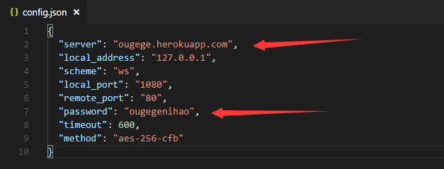
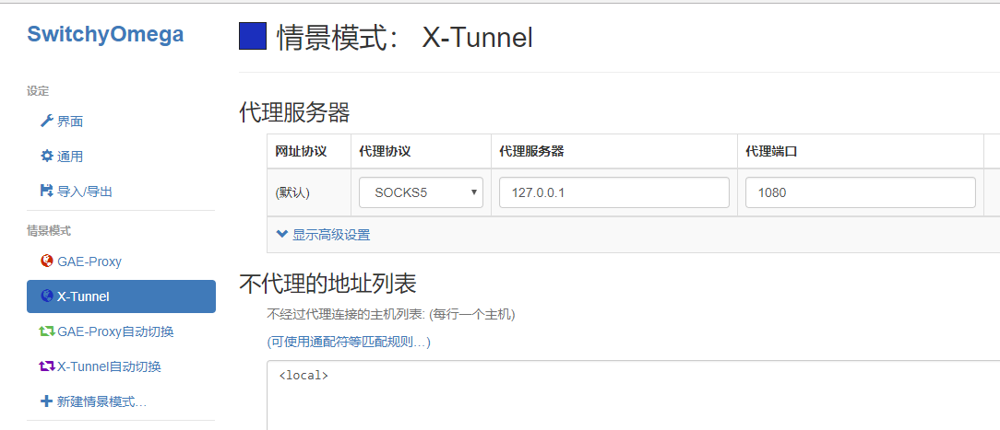
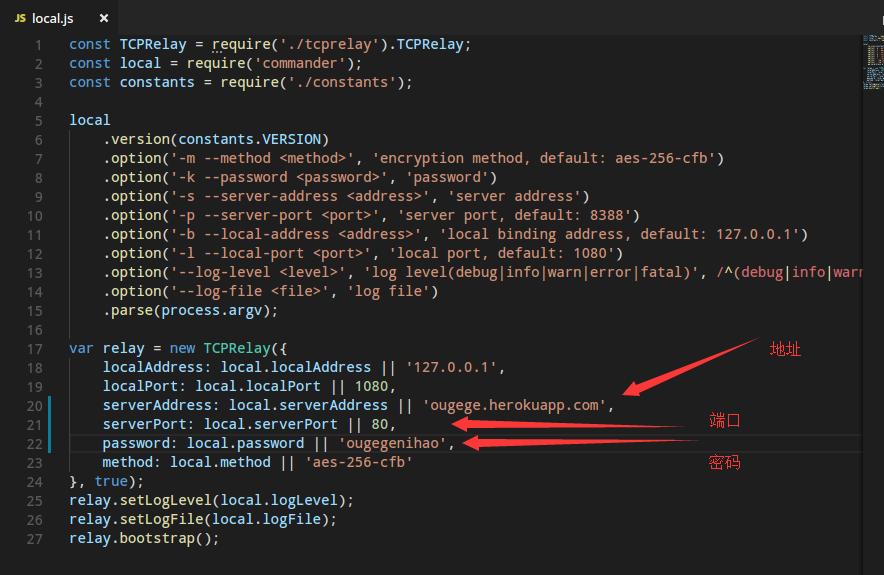
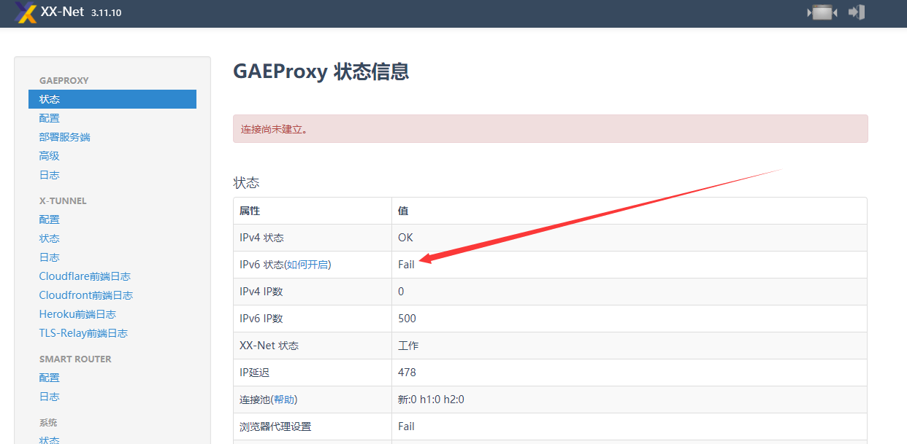
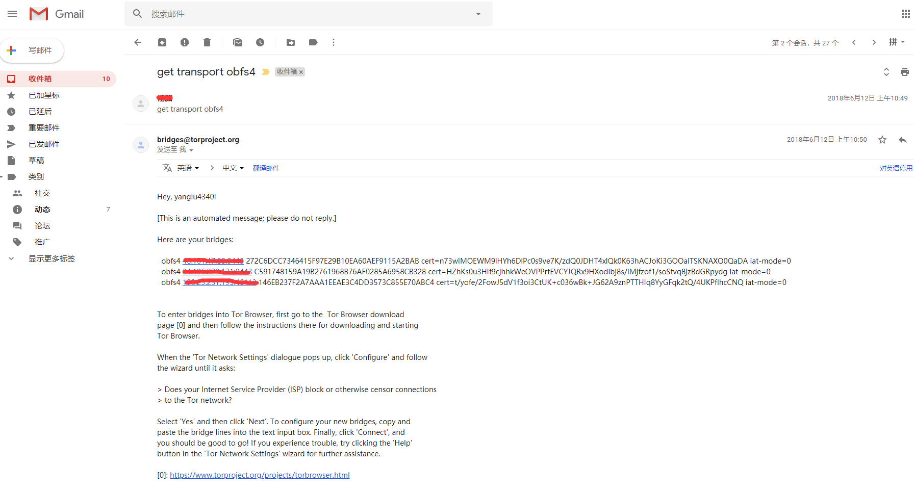
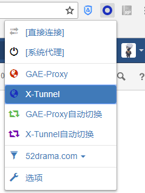
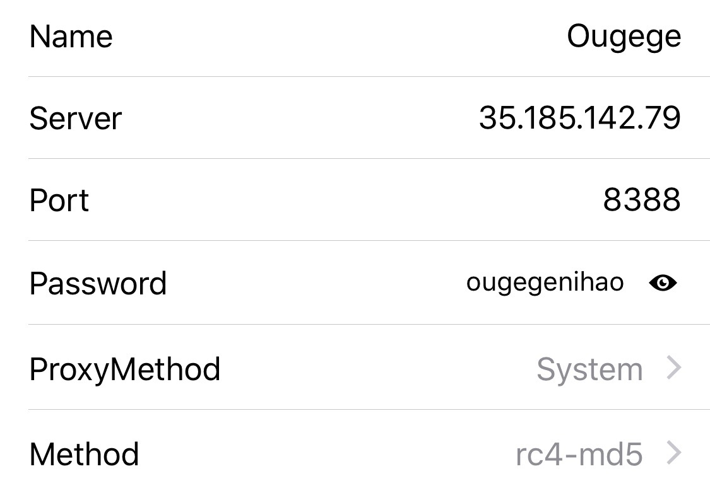

科学上网-让你连接互联网
本文仅用于学习研究之用，请自觉遵守相关法律，否则出现一切后果本人概不负责
heroku v2hero
heroku 支持每月2T的流量，所以有需求的可以尽情看油管和脸书了,哈哈
项目地址: https://github.com/onplus/shadowsocks-heroku/releases
windows系统 想自己配置的只需填写服务器和密码,其他默认就好，这里用的我已经配置的信息.

把浏览器的代理SwitchyOmega 或者 proxy 设置成 sock5 代理1080端口即可

linux 系统 官方文档介绍了常用发行版debian/ubuntu安装heroku,但是并没有说明linux客户端使用
https://devcenter.heroku.com/articles/heroku-cli
google之后找到一个npm: 使用 shadowsocks-over-websocket
https://www.npmjs.com/package/shadowsocks-over-websocket
安装项目并npm install 之后,打开local.js，填入配置
 保存,在终端node local.js，浏览器代理设置,然后可以google了

XX-NET
这个项目使用的gae(google app engine),需要自行注册google账号并开启gae服务.每个app一天1个G流量，最大上限12个app，即最多每天12G流量
项目文档: https://github.com/XX-net/XX-Net/wiki/%E4%B8%AD%E6%96%87%E6%96%87%E6%A1%A3
配置信息参考他: https://github.com/XX-net/XX-Net/wiki/how-to-create-my-appids
文档已经很详细了，我就不补充了,嫌麻烦可以直接使用我的配置:xx-net-002-194804|xx-net-003-194806|xx-net-004-194806|xx-net-005-194806|xx-net-006-194806|xx-net-007-194806|xx-net-008-194806|xx-net-009-194806|xx-net-0010-194806
重要的事情说三遍：官方默认的配置不能看油管 ！看油管 ！ 油管 ！
如果出现如下情况:  请点击链接参考文档：建议先看看,不过文档里很模糊，基本无用(我试过。。。。。）
还可以试试这个：https://blog.csdn.net/buptzhengchaojie/article/details/51335621 (亲测有效，☺）
双击运行,浏览器的插件设置可参考文档: https://github.com/XX-net/XX-Net/wiki/%E5%AE%89%E8%A3%85%E5%92%8C%E4%BD%BF%E7%94%A8-SwitchyOmega
heroku v2ray
这个对移动端更友好,很遗憾,搭建虽然成功了,但访问超时,可能哪里出了问题,后续弄好再补上.
Tor浏览器(基于firefox)
Tor浏览器最大的用处就是匿名上网,保护用户隐私,没有人知道你在互联网做了什么。很多人评价它速度慢，鱼和熊掌不可兼得。我个人使用体验上还好，google和YouTube还算流畅 Tor 浏览器安装后需要获取网桥Bridge，默认内置网桥不用试，都被Ban了
- 官方获取网桥的页面https://bridges.torproject.org/bridges 也是不行的，公开的都被Ban
- 推荐使用邮箱获取私密网桥,支持的邮箱有Gmail，Yahoo, Riseup. 联系人 bridges@torproject.org 发送标题和内容可以写 get transport obfs4 基本上都是秒回的,另外，贪心的想获取多个网桥，请3个小时后再试（我已经踩过这个坑了）  Tor 官网下载地址: https://www.torproject.org/projects/torbrowser.html.en
代理配置
- chrome浏览器代理配置
参考以下教程安装压缩包内的
SwitchyOmega.crx
https://jingyan.baidu.com/article/e5c39bf56286ae39d6603374.html

安卓下载ss客户端 https://github.com/shadowsocks/shadowsocks-android/releases
ios下载ssrConnectPro或者wingy,
安卓和ios配置文件如下:

本地预览fq-book
在线版 https://loremwalker.github.io/fq-book/#/
本地查看本书需要git 和 node 环境
npm i docsify-cli -gdocs目录中右击打开git bash输入docsify initdocs 目录 在git bash 输入 docsify serve完成本地部署，在浏览器中输入localhost:3000
然后把浏览器的代理SwitchyOmega 或者 proxy 设置成 sock5 代理1080端口即可,需要科学上网的时候把情景模式切换成使用代理的情景.